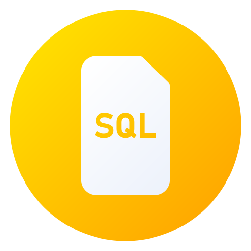

My Skills

Excel

SQL

Power BI

Data Visualization
Python
Maths & Statistics

Machine Learning

I'm Venkata Narayana Potla, currently pursuing my M.Tech in Data Science, with a strong focus on developing skills in statistical analysis, data visualization, and machine learning. I'm passionate about turning raw data into meaningful insights that drive informed decision-making.
Alongside my studies, I've worked as a freelance Data Analyst on platforms like Fiverr and Upwork, where I collaborated with international clients to clean and analyze data, define KPIs, and build interactive Power BI dashboards.
Prior to freelancing, I completed an internship at Standard Access Private Limited, where I optimized SQL queries and improved the reliability of datasets by 40%, enabling faster, more accurate reporting.
Before transitioning into the data field, I spent over two years as a freelance photographer, where I honed my creativity, project management, and communication skills—abilities that now complement my analytical work.
GITAM University Visakhapatnam, Andhra Pradesh
2025 - PresentVignan's Lara Institute of Technology and Science
2016 - 2020Mar 2024 – Apr 2025 · 1 yr 2 mos · India · Remote
May 2023 – Jan 2024 · 9 mos · Hyderabad, Telangana, India · Remote
Mar 2023 – Nov 2023 · 9 mos · Hyderabad, Telangana
Sep 2020 – Mar 2023 · 2 yrs 7 mos · Hyderabad, Telangana, India · Remote

Tools: Python, Jupyter Notebook

Tools: Excel, Power BI
Tools: SQL, Power BI
venkatpotla33@gmail.com
+91 8790295489
Visakhapatnam, Andhra Pradesh, India